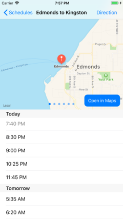
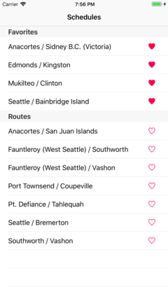
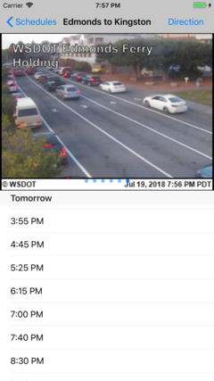

WA FerryTime
iOS app for viewing the schedule of the Washington State Ferries.
Features
- Easily find the departures times for each route.
- Add routes to your favorites for easy access.
- Check the dock cameras from within the app.
- Get directions to the dock.
Screenshots



Support
Have a question? Found a bug? You can contact me at charlieschuy@gmail.com or on Twitter